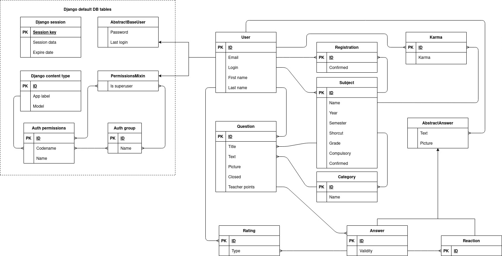

Fituška v2
- Autoři
- Filip Solich
xsolic00@stud.fit.vutbr.cz -
ER diagram, DB schema, Backend, Nasazeni, Frontend (částečně)
- Marek Sechra
xsechr00@stud.fit.vutbr.cz -
ER diagram, DB schema, Frontend, Backend (částečně)
- Vasil Poposki
xpopos00@stud.fit.vutbr.cz -
Usecase diagram, DB schema, Backend, Frontend (částečně)
- URL aplikace
- http://www.stud.fit.vutbr.cz/~xautor01/IIS
- (pokud má aplikace více vstupních stránek, napište obdobně další URL)
Uživatelé systému pro testování
| Login | Heslo | Role |
|---|
| xnovak00 | filip_novak | Administrátor |
| xsechr00 | marek_sechra | Moderátor |
| xsolic00 | filip_solich | Učitel předmětu IIS 2021/2022 |
| xvokal00 | nejakeheslo1 | Student předmětu IIS 2021/2022 |
Implementace
Databáze

Instalace
Softwarové požadavky
Python 3.8+ a python knihovny:
- Django 3.2.7
- Pillow 3.2.7
Postup instalace
Stručně popište:
- postup instalace na server,
- (verze PHP apod.),
- jak rozbalit, konfigurovat, inicializovat databázi, ...
Známé problémy
Zde popište, které body zadání nejsou implementovány a z jakého důvodu. Např. „Z časových důvodů nebyla implementována správa uživatelů.” Pomůžete tím zrychlit hodnocení, když neimplementované funkce nebudeme muset dlouze hledat.